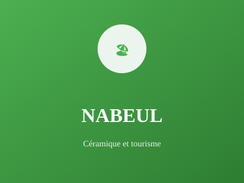

Région du Cap Bon

Région du Cap Bon, Nabeul est réputée pour son artisanat traditionnel, particulièrement la céramique et la poterie. Elle combine beauté naturelle, activités touristiques balnéaires et agriculture florissante.